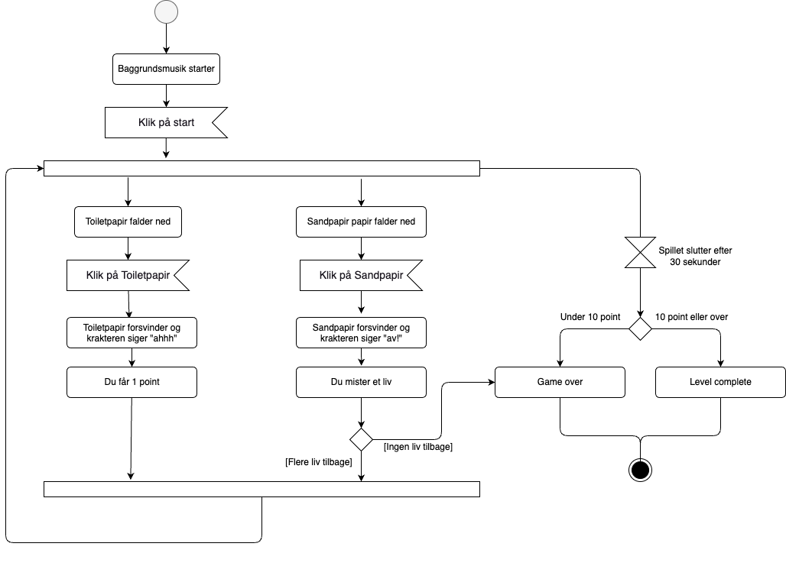
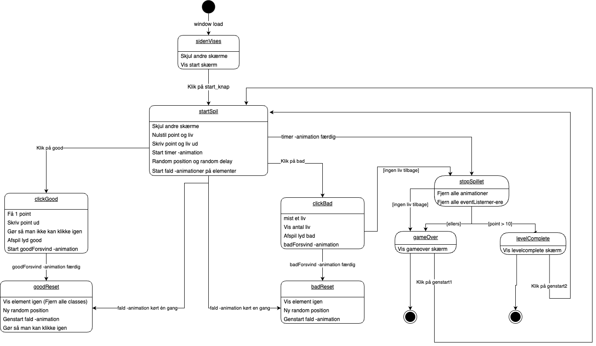

Teknik
Aktivitets- og State Machine diagrammer anvendes til at illustrere forskellige aspekter af et projekt, hvor det ene fokuserer på spillets forløb, mens det andet viser strukturen af koden skrevet i JavaScript.
Aktivitets diagram
Aktivitetsdiagrammet giver en visuel repræsentation af, hvordan spillet skrider frem. Det viser de forskellige aktiviteter eller handlinger, der finder sted i spillet, og hvordan de er forbundet. Dette diagram er nyttigt for at forstå spillets flow, hvilke trin der udføres, og hvordan de relaterer sig til hinanden i løbet af spillet.
State Machine diagram
På den anden side illustrerer State Machine-diagrammet kodens opbygning i JavaScript. Det viser de forskellige tilstande, som koden kan befinde sig i, og overgangene mellem disse tilstande. Dette diagram hjælper med at forstå, hvordan koden reagerer på forskellige input og situationer, og hvordan den ændrer sin tilstand i løbet af programmets udførelse.
Samlet set tilbyder begge diagrammer en helhedsforståelse af projektet, hvor aktivitetsdiagrammet fokuserer på brugerinteraktion og spilflow, mens State Machine-diagrammet dykker ned i kodens struktur og dynamik. Disse visualiseringer er værdifulde redskaber til at kommunikere og forstå komplekse systemer inden for spiludvikling og softwareprogrammering.